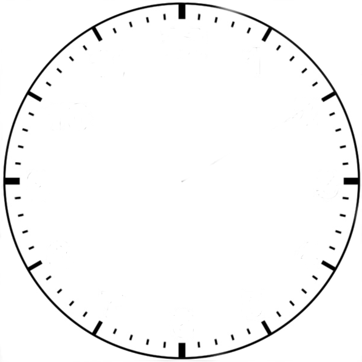
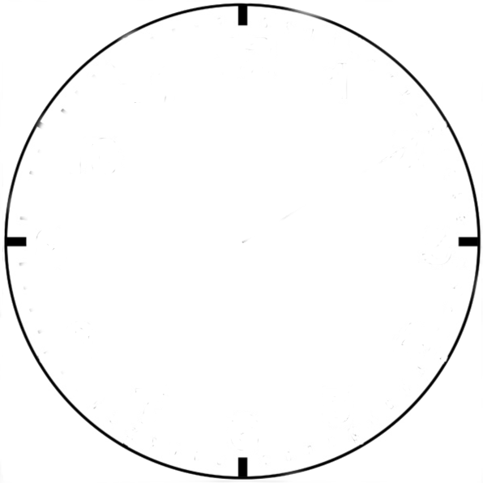

Mokomės pažinti laiką
Spalva
 
12
1
2
3
4
5
6
7
8
9
10
11
Sekundžių rodyklė
Minučių rodyklė
Rodyti skaičius
Skaičiai
Arabiški
Romėniški
Rodyti tik pagrindinius skaičius
Rodyti visus skaičius
Spalvos
Valandų spalva
Minučių spalva
Sekundžių spalva
Nustatyti ranka
Nustatyti
Valandas
Minutes
Sekundes
Rodyti skaitmeninį laikrodį
Valandos:
Minutės:
Sekundės: